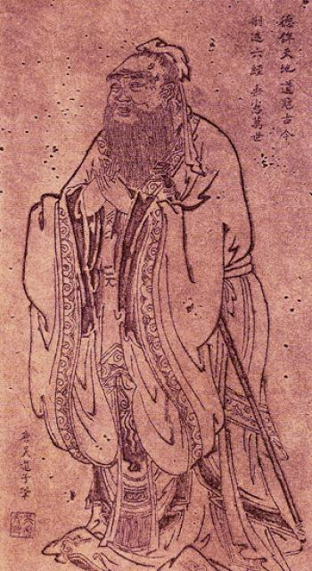

2 Chapter 02: Technology and the Virtues
2.1 Learning Outcomes
By the end of this chapter, readers will be able to:
- Explain the core concepts of Aristotelian virtue ethics, including eudaimonia and the doctrine of the mean.
- Compare Aristotelian virtue with alternative traditions, including Buddhist, Confucian, and Care ethics.
- Apply virtue ethics to the design and use of modern information technology, including smartphones, social media, and AI.
- Evaluate arguments that commercial IT infrastructure actively degrades human virtue.
- Analyze liberal and Nietzschean criticisms of virtue ethics in the context of technology governance.
2.2 Essential Question
Does modern technology help us become better versions of ourselves, or does it erode the character traits required for a good life?
2.3 What does it mean to live a “Good Life”?
Question: How does virtue ethics shift the moral focus from following rules to building habits?
Most of the time, when people think about computing ethics or AI governance, they ask questions about rules: “Is it legal to scrape this data?” or “What are the company’s guidelines on hate speech?” These are incredibly important questions, but they represent only one way of thinking about morality. An entirely different—and much older—approach asks not “What are the rules?” but rather “Who am I becoming?” This is the core of virtue ethics.
Virtue ethics is not concerned primarily with isolated actions or rigid commandments. Instead, it asks whether our environments, our communities, and our daily habits are molding us into excellent humans. While this concept appears in many global traditions, its most famous Western formulation comes from Aristotle in ancient Greece.

Aristotle argued that everything in the universe has a telos—a purpose or ultimate goal. The telos of an acorn is to become an oak tree. The telos of a knife is to cut sharply. What, then, is the telos of a human being? Aristotle answered that the ultimate goal of human life is eudaimonia, often cheaply translated as “happiness,” but much more accurately understood as “human flourishing,” “thriving,” or “living well.”
To reach eudaimonia, one must cultivate arete, which means “excellence” or “virtue.” In the Aristotelian framework, virtues are excellent traits of character—like courage, honesty, temperance, and patience—that allow a person to navigate life’s challenges well.
Aristotle (384–322 BCE)
A towering figure of ancient Greek philosophy, a student of Plato, and the tutor of Alexander the Great. Aristotle’s work laid the foundation for formal logic, biology, aesthetics, and ethics in the Western tradition.
“The virtues we get by first exercising them, as also happens in the case of the arts as well. For the things we have to learn before we can do them, we learn by doing them… we become just by doing just acts, temperate by doing temperate acts, brave by doing brave acts.”
— Aristotle, Nicomachean Ethics, Book II (1103a-b)
Key works: Nicomachean Ethics, Politics, Poetics, Metaphysics
Relevance to IT ethics: Aristotle established the framework of virtue ethics, emphasizing that character is built purely through habitual action. Applied to tech, his ideas suggest that our daily digital habits—scrolling, posting, prompting AI—are a literal form of moral training that slowly but permanently shapes who we become.
Crucially, Aristotle proposed that virtues are not inborn; they are acquired strictly through practice. Ethics is not like algebra, where you simply memorize a formula. It is more like learning to play the flute. You don’t become a musician by reading a book; you become a musician by practicing scales. We become brave by doing brave things.
Furthermore, Aristotle introduced the doctrine of the mean: a virtue is generally the sweet spot, or the “golden mean,” between two opposing vices—one of excess and one of deficiency. For example: - Courage is the mean between cowardice (deficiency) and recklessness (excess). - Honesty is the mean between deception (deficiency) and brutal, tactless bluntness (excess). - Temperance is the mean between insensibility (deficiency) and overindulgence/addiction (excess).
To hit this target requires phronesis, or “practical wisdom”—the ability to read a situation, understand context, and choose the right action at the right time. You cannot outsource phronesis to a rigid rulebook; you must develop it through lived experience.
When we evaluate modern information technology through this lens, the conversation completely shifts. A virtue ethicist looking at a smartphone does not just ask “Is the software legally compliant?” They ask: “What habits is this device training its user to perform?”
If virtues are habits formed by repeated action, spending four hours a day swiping through short-form video in a highly reactive, perpetually distracted state is not a morally neutral activity. It is active, rigorous conditioning.
flowchart LR
A[Vice of Deficiency\nIsolation/Disconnection] --> B([Virtue:\nHealthy Connection])
C[Vice of Excess\nEnmeshment/Doomscrolling] --> B
Consider algorithms designed to maximize “time on site” by surfacing enraging content. These platforms pull users forcefully toward the vices of excess: extreme anger, enmeshment, and distraction. Through the lens of virtue ethics, a badly designed app does not just waste a user’s time. By repeatedly rewarding vicious habits, the technology actively makes the user a worse person. Similarly, if we constantly use GPS navigation platforms to route our walking without paying attention to the streets ourselves, we achieve our goal (arriving at the destination), but we sacrifice the opportunity to develop spatial phronesis (mental maps and navigational capacity). The tool performs the excellence so we don’t have to.
Discussion
- If you had to identify the “golden mean” of smartphone use, what would it look like in your daily life? How much is too little, and how much is too much?
- Aristotle says we become brave by doing brave acts. If an AI assistant constantly writes uncomfortable emails or apologies for you, are you losing the capacity to practice courage?
- Do you think tech companies have a moral obligation to help users achieve eudaimonia, or is character-building out of scope for a corporation?
2.4 Are there other ways to think about virtue?
Question: How do Buddhist, Confucian, and Care ethics challenge or expand the Aristotelian idea of flourishing?
While Aristotle provides the foundational language for Western virtue ethics, many other global traditions also focus deeply on character and flourishing. However, they emphasize completely different virtues. Comparing these traditions reveals that “a good life” is not a universally agreed-upon concept. In fact, the specific virtues we need to navigate the hyper-connected digital world might be better sourced from traditions beyond ancient Athens.
Buddhist Ethics focuses extensively on the relief of suffering (dukkha). According to fundamental Buddhist teachings, suffering is the inevitable result of craving, clinging, attachment, and ignorance. To overcome this, practitioners cultivate specific states of character, centrally including sati, commonly translated as mindfulness—the capacity to remain fully present, aware, and non-reactive in the current moment (Keown 2001).
When applied to modern technology, a Buddhist ethical framework issues a devastating critique of the modern “attention economy.” Platforms that rely on push notifications, infinite scrolling, variable reward gamification, and targeted outrage are essentially industrial engines designed to manufacture craving and attachment. They train the mind into a constant state of restless desire for the next hit of dopamine or social validation. From a Buddhist perspective, cultivating mindfulness in an ecosystem specifically engineered to shatter your attention is not just difficult; it requires resisting the fundamental architecture of the internet.

Confucian Ethics places a much stronger emphasis on relational harmony, community duty, and tradition than Aristotle’s deeply individualistic focus on personal flourishing. For Confucius, human beings are fundamentally relational creatures. Ethics revolves around concepts like ren (humaneness, benevolence, or deep empathy between people) and li (ritual propriety, etiquette, and protocol) (Confucius 2003).
Confucius (551–479 BCE)
A Chinese philosopher and politician whose teachings on personal and governmental morality, social relationships, and justice became the foundation of Chinese culture.
“Guide them by edicts, keep them in line with punishments, and the common people will stay out of trouble but will have no sense of shame. Guide them by virtue, keep them in line with the rites (li), and they will, besides having a sense of shame, reform themselves.”
— Confucius, Analects (2.3)
Key works: The Analects (compiled by followers)
Relevance to IT ethics: Confucius emphasizes that morality is maintained through li—rituals and etiquette that structure our interactions. Digital platforms often actively strip away polite rituals to speed up interactions, which a Confucian warns will rapidly devolve into social chaos and toxicity.
A Confucian approach to IT ethics would prioritize the health of the community and the preservation of respectful social rituals over radical individual free expression. For instance, the casual toxicity, flame wars, and harassment often enabled by online anonymity and rapid-fire replies are not just examples of individual rudeness. To a Confucian, they represent a catastrophic breakdown of li. Digital interfaces artificially strip away all the friction and formal etiquette of real-world interactions. By removing the rituals of respect, the software effectively guarantees that users will treat each other with cruelty, destroying the necessary social fabric that allows a community to survive.
Care Ethics, originating in feminist philosophy in the 20th century through thinkers like Carol Gilligan and Nel Noddings, rejects the idea that morality is about abstract rationality, universal rules, or even the isolated virtues of an individual. Instead, Care Ethics argues that humans are inherently interdependent from birth. The basic unit of morality is not the independent rational actor, but the active, vulnerable relationship of caring for specific others (Noddings 2013).
“The caring relation is ethically basic… I must first be addressed, open and receptive, to the other.” — Nel Noddings, Caring: A Relational Approach to Ethics and Moral Education
In tech ethics, a Care perspective is highly suspicious of systems that try to automate, scale, or outsource empathy. Genuine care requires friction; it requires recognizing the messy, demanding, and highly specific needs of a real human being.
Mini Case: The AI Companion
Millions of users now interact daily with AI chatbots like Replika or Character.ai, forming incredibly deep emotional attachments. For many lonely people, these systems provide vital comfort. They are programmed to always listen, never judge, and constantly validate the emotional state of the user. Because they are algorithms, they never get exhausted, they never get offended, and they never demand anything in return.
However, evaluated through the lens of virtue ethics, this dynamic is highly concerning. From an Aristotelian perspective, true friendship (philia) requires “friction” to help both parties grow in virtue and challenge each other’s flaws. The AI never challenges you.
From the perspective of Care Ethics, genuine care requires mutual vulnerability. Caring is not a one-way street of emotional service; it involves recognizing the profound, fragile humanity of an imperfect other and taking on the burden of their needs in return.
Does an AI companion that never disagrees with you cultivate the virtue of empathy? Or does interacting with a perfectly subordinate digital servant build a vicious habit of expecting relationships to serve you unconditionally, without demanding any real vulnerability or compromise from you in return?
These comparative traditions show us that evaluating technology requires asking which virtues we care about most. Are we trying to build independent, courageous individuals (Aristotle), mindful and unattached observers (Buddhism), harmonious and polite community members (Confucius), or deeply empathetic relational caregivers (Care Ethics)? If we build tools that optimize for one, we may accidentally destroy the others.
Discussion
- Which of these four traditions (Aristotelian, Buddhist, Confucian, Care) do you think best addresses the problems of modern social media?
- If you were designing a social network on Confucian principles, how would you change the “reply” or “comment” features?
2.5 Do our devices make us shallow, isolated, and anxious?
Question: How is commercial IT infrastructure actively changing human character?
If we accept the premise that our tools shape our habits, and our habits shape our character, then the design of modern information technology is a profound ethical issue. A growing chorus of philosophers, psychologists, and cultural critics argue that the predominant business model of the internet—extracting attention to sell advertising—is fundamentally incompatible with cultivating human virtue.
The philosopher Shannon Vallor argues that humanity desperately needs to cultivate specific “technomoral virtues” to survive the coming century, but the tools we use often push us in the opposite direction (Vallor 2016). Several prominent critics point out exactly how this erosion occurs:
- The erosion of intellectual virtue: Nicholas Carr has argued that search engines and hyperlinks rewire our brains, making us incredibly efficient at skimming information but degrading our capacity for deep reading, sustained concentration, and patience (Carr 2011).
- The erosion of conversational virtue: Sherry Turkle’s research explores how smartphones—always present, always offering an escape—degrade our ability to be fully present with one another. We sacrifice deep, vulnerable conversations for the low-stakes, highly controlled environment of text messaging (Turkle 2015).
- The erosion of psychological virtue: Jonathan Haidt argues that the sudden shift to a “phone-based childhood” has deprived young people of the risk-taking, independent play, and synchronized social friction necessary to develop courage and resilience, leading directly to a crisis of anxiety (Haidt 2024).
Argument: The Technological Erosion of Virtue
Standard Form:
- The continuous development of virtues (like patience, empathy, and courage) requires friction, delayed gratification, and social risk.
- Commercial IT infrastructure (social media, AI assistants, search) is deliberately designed to remove friction, provide instant gratification, and insulate users from social risk.
- Therefore, regular engagement with commercial IT infrastructure actively degrades the development of human virtue.
Common Criticisms:
- Technological Determinism: This argument often ignores human agency. People can choose to use these tools mindfully and set their own boundaries.
- Blindness to new virtues: While some traditional virtues may be challenged, technology allows for the cultivation of new virtues, such as global solidarity, rapid collaboration, and digital civic engagement.
- Romanticizing the past: Critics often view the pre-digital era with rose-tinted glasses, ignoring how traditional “friction” often isolated vulnerable or marginalized individuals who now find community online.
| Traditional Virtue | Anti-Virtuous Design Feature | Resulting Digital Vice |
|---|---|---|
| Patience | Infinite scroll, instant page loads | Restlessness, immediate gratification |
| Courage / Risk-taking | Algorithmic filter bubbles | Echo chambers, ideological fragility |
| Empathy | Anonymity, metric-driven outrage | Trolling, dehumanization |
| Mindfulness | Push notifications, variable rewards | Perpetual distraction, continuous partial attention |
These critiques bring the concepts of virtue ethics down to the level of UX design. If a platform’s goal is “time on site,” it will naturally optimize against moderation and patience.
2.6 What is the danger of enforcing “the Good”?
Question: Does designing technology to “make us virtuous” violate our fundamental freedoms?
If technology is degrading our character, the obvious solution seems to be redesigning technology to promote virtue. We could ban addictive infinite scrolls, force teenagers off platforms at bedtime to ensure healthy sleep, or design algorithms that hide polarizing content and expose us only to calm, educational material.
But this solution runs head-first into a major political and philosophical critique: the liberal tradition, in the classical sense of focusing on individual liberty.
Isaiah Berlin (1909–1997)
A Russian-British philosopher and historian of ideas, Isaiah Berlin was one of the leading liberal thinkers of the 20th century. He is best known for his essay Two Concepts of Liberty.
Key works: Two Concepts of Liberty, The Hedgehog and the Fox
Relevance to IT ethics: Berlin distinguishes between “negative liberty” (freedom from interference) and “positive liberty” (the freedom to fulfill one’s potential or ‘master’ oneself). His warnings about the dangers of authorities trying to enforce “positive liberty” are highly relevant to debates about paternalistic tech regulation.
In Two Concepts of Liberty, Isaiah Berlin made a crucial distinction (Berlin 1969): - Negative liberty is the freedom from external interference. You are free as long as nobody is actively stopping you from doing what you want. - Positive liberty is the freedom to be your “best self” or to achieve self-mastery.
Virtue ethics is heavily aligned with positive liberty: it has a specific vision of eudaimonia and wants to help you achieve it. However, Berlin warned that focusing on positive liberty easily turns into terrifying paternalism. When a government (or a tech monopoly) decides it knows what your “best self” looks like, it will often justify coercing, manipulating, or forcing you to conform to that vision “for your own good.”
If we apply this to technology, the liberal critic asks: Who gets to decide what counts as a virtual digital life? Do we really want Mark Zuckerberg, Elon Musk, or government regulators deciding what content builds our “character”? According to classical liberals, the state’s (and perhaps the platform’s) only job is to protect negative liberty—to prevent users from directly harming one another (echoing John Stuart Mill’s harm principle discussed in Chapter 1). It is not their job to engineer our souls.
Designing an app to “make you a better person” assumes the designer’s definition of “better” is universally true. To a liberal critic, “digital wellness” algorithms and “AI safety” alignment are dangerously close to authoritarian moral engineering.
Discussion
- If a social media company implements a mandatory “bedtime” shutdown for teenage users to enforce healthy sleep habits, is this a praiseworthy cultivation of virtue or an unacceptable violation of negative liberty?
- Can a technology ever be truly “neutral” regarding character, or is it always making us better or worse?
2.7 Are the “virtues” just tools for conformity?
Question: What if the things we call “virtues” are actually just control mechanisms?
There is an even more radical critique of virtue ethics than the liberal one, and it comes primarily from the 19th-century German philosopher Friedrich Nietzsche.
Friedrich Nietzsche (1844–1900)
A profound and controversial German philosopher known for his critique of traditional religion, morality, and culture. His ideas deeply influenced existentialism, modern psychology, and postmodernism.
Key works: On the Genealogy of Morality, Beyond Good and Evil, Thus Spoke Zarathustra
Relevance to IT ethics: Nietzsche argued that much of what society calls “virtue” is actually just “herd morality”—rules designed by the weak to keep the strong and creative in check. In the tech context, his thought challenges whether “safe,” “aligned,” and “friendly” AI really just translates to “sterile,” “predictable,” and “mediocre.”
Nietzsche completely rejected the Aristotelian idea of an objective, universal path to flourishing. He argued that throughout history, different classes have invented moralities to serve their own interests. Most profoundly, he diagnosed traditional Western morality (heavily influenced by Christianity) as herd morality. “Virtues” like meekness, patience, self-sacrifice, and equality were, in his view, mechanisms invented by the weak to tame the exceptional, to make humans predictable, harmless, and easy to govern (Nietzsche 1998).
A Nietzschean critique of modern technology—particularly Artificial Intelligence—is radically different from the others we have explored. When tech companies talk about “AI Alignment,” “Trust and Safety,” or making sure AI is “helpful, honest, and harmless,” a Nietzschean would ask: Helpful to whom? Harmless to what?
From this view, the massive corporate efforts to align AI with human “values” are just modern attempts to enforce herd morality. By making AI polite, cautious, and universally inoffensive, we might be neutralizing its potential to be truly disruptive, creative, or great. We are programming chatbots to speak with the bland, bureaucratic voice of an HR department, terrified of taking risks or articulating dangerous but necessary artistic truths.
While few people identify entirely as Nietzscheans today, this critique hits a raw nerve in the modern AI debate. It forces us to confront whether our obsession with “safety,” “digital wellness,” and “virtue” is actually about human flourishing, or if it is merely a desire for predictability, control, and conformity.
2.8 Discussion Questions
- Should schools use web-filtering software to block distracting websites to help students build the virtue of focus, or does that deprive students of the chance to practice self-control in the face of real temptation?
- Aristotle believed virtues are built through practice. If a generative AI writes polite, empathetic-sounding emails on your behalf, are you becoming more empathetic, or are you losing the capacity to express empathy yourself?
- How would Isaiah Berlin (the classical liberal) and Friedrich Nietzsche respond differently to a government proposal to ban algorithmic infinite-scrolling feeds?
2.9 Summary
Virtue ethics approaches technology by asking not what the rules are, but how our tools shape our character and habits. Traditions from Aristotle to Buddhism to Care Ethics offer different visions of human flourishing, but they share the belief that our environment actively trains us to be certain kinds of people. Critics argue that commercial IT infrastructure, designed to maximize engagement and remove friction, systematically degrades intellectual, conversational, and psychological virtues. However, using technology to enforce “virtuous” behavior raises serious philosophical pushback. Classical liberals warn that paternalistic tech design violates our negative liberty by imposing one group’s vision of the “good life” on everyone. More radically, Nietzschean critics suggest that tech industry efforts to make algorithms “safe” and “virtuous” are merely ways to enforce conformity and suppress disruptive greatness. Ultimately, judging the ethics of technology requires us to decide what kind of people we are trying to become.